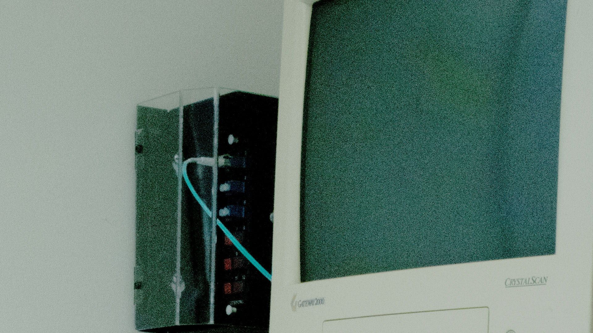

I chose this picture because it was just inconspicuous in the room, as soon as we were set free across the building everyone left...except me. The computer just started to stare at me. So i stared back

A book can be a challenging thing to photograph. why take a picture of the thing when you can read it and gain a greater understanding of the book than you would with a photo. This is why